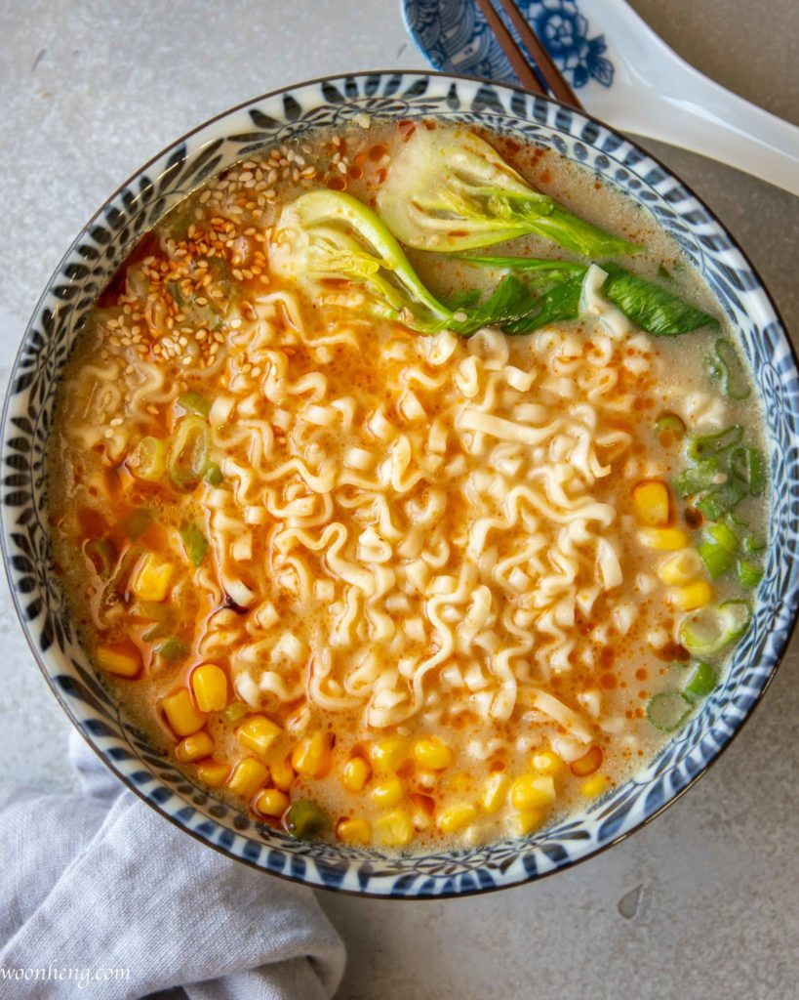

How to Make Miso Ramen

Let's make your new favorite ramen!
Ingredients
- 1/2 tablespoon neutral oil
- 1/2 teaspoon grated ginger
- 3 garlic cloves, finely minced
- 3 stalks green onion, white and green parts separated
- 1/2 tablespoon toasted sesame seeds
- 2.5 cups water
- 1 piece of kombu, 3x5 inches
- 2 instant noodle squares
- 1/2 tablespoon soy sauce
- a handful of bok choy, halved
- 1 tablespoon yellow miso
- 1/2 tablespoon dou ban jiang
- 1/2 cup unsweetened plant milk
- 2-3 tablespoon sweet corn, for garnish
- a splash of chili oil, for garnish
- toasted sesame seeds, for garnish
Steps
- To make the ramen broth, heat a 2-quart saucepan and add the oil. Once heated, sauté the ginger until aromatic. Then, add the garlic, white part of scallions, toasted sesame, and continue to sauté for another 30 seconds.
- Next, add the water and kombu. Bring the mixture to a boil then lower the heat down and simmer for 2 to 3 minutes. This step is to cook the kombu and you can place a lid over in this step but do make sure that the broth is simmering.
- Remove the kombu and then immerse the bottom of a sieve in the broth. Using the back of a spoon, stir and press the miso and dou ban jiang through the sieve until all is dissolved.
- Add the noodle and soy sauce. Cook the noodle as directed on the package.
- Right before the noodles turn al-dente, add the bok choy and cook until crisp-tender. Swirl in the milk and cook for another minute to warm up the milk.
- Turn off the heat and transfer noodle to a bowl. To serve, top it with corn, chopped scallions (green parts), a swirl of chile oil, and toasted sesame seeds.
This recipe was originally written by Woon Heng and can be found at her website. Please check out her website and other recipes and leave her a good review if you love this ramen recipe as much as I do!